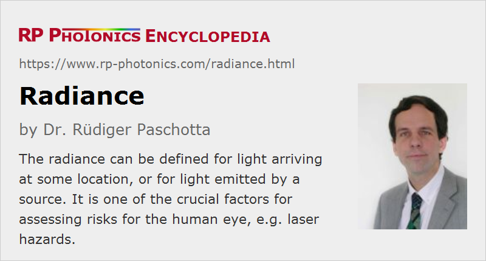

Radiance
Definition: the optical power per unit area and solid angle
German: Strahldichte
Categories: general optics, light detection and characterization, optical metrology, physical foundations
Formula symbol: L
Units: W cm−2 sr−1
How to cite the article; suggest additional literature
Author: Dr. Rüdiger Paschotta
Radiance is a radiometric quantity. It can be defined both for light sources and for light arriving at some location, as explained in the following two sections. Essentially, the radiance can be considered as radiant intensity per unit area, but a real understanding of the subject requires more thoughts, as presented in the following.
Radiance of Arriving Light
The radiance of arriving light is defined as follows. We consider a situation where light from an extended light source hits some small area, which (for a first consideration) is oriented such that it is hit by the light in a perpendicular fashion. The irradiance E is then the optical power hitting that area divided by the magnitude of that area. The radiance L is the irradiance per solid angle, or the optical power per unit area and solid angle. That solid angle refers to the directions from which the mentioned area receives light from the light source. The vertex of that solid angle is located at the center of the considered area. (It is important to always use the vertex corresponding to the considered area; the areal element and the direction cone belong together.)
We may generalize this for non-normal incidence (see Figure 1); we then also need to divide by cos θ (with θ being the angle of incidence, measured against the normal direction) in order to take into account that we could get more power to the areal element by orienting it towards the source.
The radiance is generally a function of position and viewing direction. If a light source radiates homogeneously over its area, the radiance will be independent of viewing direction in a certain range of viewing directions spanning the size of the source.
The total optical power hitting our areal element can be considered as being composed of contributions to different parts of the element from different incoming directions:
The fundamental units of the radiance are W m−2 sr−1 (watts per square meter and steradian), or more commonly W cm−2 sr−1.
The radiance can also be spectrally resolved, i.e., decomposed into contributions from different wavelengths or optical frequencies; the total radiance can be written as
where Lλ is the spectral radiance with respect to wavelength; the same can be done with optical frequencies. The units of Lλ are W cm−2 sr−1 nm−1, and those of Lν are W cm−2 sr−1 Hz−1.
Example: Radiance of Sun Light and Related Eye Hazards
As an example case, we consider sunlight which hits a human eye, which is oriented towards the Sun. The received radiance is the irradiance (e.g. 520 W/m2) divided by the solid angle which is related to the angular subtense of the Sun on Earth. The latter is approximately α = 10 mrad, resulting in a solid angle of Ω = π α2 / 4 = 79 · 10−6 sr. The resulting radiance of 6.6 · 106 W m−2 sr−1 = 660 W cm−2 sr−1 is approximately constant within that subtense, when we ignore details like solar flares.
Interestingly, the radiance of sunlight is independent of the distance (except in some sense for very large distances, see below). This is because at larger distances (e.g. on Mars), the irradiance is lower, but the angular subtense is also lower: there, the Sun appears smaller, but not less bright.
Further, the radiance of sunlight (or of light from the Moon) would also not be increased when viewing the sun through a telescope; generally, lenses cannot increase the radiance. While the less relevant radiance at the eye's pupil can be substantially increased by a telescope, the retinal image is also increased, and the retinal irradiance therefore cannot be increased. Nevertheless, viewing the Sun through a telescope is hazardous, since it increases the total optical power entering the eye and the illuminated area on the retina, so that the heating of the retina becomes stronger due to the reduced radial heat flow. Even without a telescope, direct looking into the Sun is not recommended.
Because of that constancy of radiance (as long as there is no loss of light on the way to the observer), one may actually consider the irradiance is a property of the Sun, rather than as a field quantity as it was originally defined.
While the irradiance on the entrance of the eye together with the area of the eye's pupil determines the total optical power getting to the retina of the eye (neglecting some power losses in the eye), the radiance determines the resulting optical intensity (or irradiance) on the retina, because the angular subtense of the retinal image is the same as the angular subtense of the Sun as seen from outside the eye. (In order to understand the latter statement, consider light rays from different parts of the Sun going through the center of the eye's lens – they are not deflected there.)
The irradiance of the retina is of course an essential factor (apart from some other details such as the irradiated area and the spectral qualities) how dangerous the radiation is for the eye. Therefore, the radiance and not just the irradiance of the incoming radiation (seen outside the eye) is the more relevant factor concerning safety. Inside the eye, the irradiance of the retina counts, but the radiance is a quantity outside the eye and independent of particular properties of the eye which can be used to quantify eye hazards.
Note, however, that the risk for the retina also depends on how large the irradiated area is, since the resulting temperature increase depends on that.
Radiance of a Distant Star
The considerations explained above show that the radiance of a star is in principle independent of the observation distance. Nevertheless, the perceived distance clearly does depend on that distance. That is related to the fact that the angular subtense of a distant star is far smaller than the resolution limit of the eye. In order to take that into account, one may calculate an effective radiance based on an angular subtense of 1.5 mrad (a typically used value for human eyes) instead of the actually much smaller subtense of the star. The result then scales inversely with the square of the observation distance, in agreement with the variation of perceived brightness.
This example shows that the perceived brightness does not strictly depend only on the physical radiance, because the eye has a limited angular resolution.
The situation is profoundly different when observing the Moon, for example, from Earth or a smaller distance. Here, the eye can easily resolve a disk, and the apparent brightness does not depend on the observation distance.
Radiance of a Laser Beam in the Context of Laser Safety
In the context of laser safety, the irradiance is not calculated simply based on the physical definition as given at the beginning of this article, but rather with some modifications:
- As long as the diameter of a laser beam is smaller than the diameter of the eye's pupil, so that no truncation occurs, the irradiance at the eye is calculated by dividing the optical power by the area of the pupil – which leads to an average irradiance, which can be substantially lower than that on the beam axis.
- Assuming a beam divergence below 1.5 mrad (full angle), one assumes a full angle of 1.5 mrad according to the limitation of the eye.
So it is apparent again that the physically defined radiance cannot be directly applied for assessing laser hazards; one requires modifications which take into account essential properties of the human eye.
Measurement of the Radiance with Angular Resolution
The radiance of light coming from a source can be technically measured with an imaging setup as shown in Figure 2.
In the simplest case, the used photodetector is a photodiode, for example, not having any spatial resolution. It acts as the field stop, i.e., its dimensions together with the distance to the lens determine the field of view, from which radiation can be detected. The areal element is defined by the aperture stop. In order to obtain the radiance, the optical power registered by the detector is divided by the area of the aperture stop and by the solid angle according to the field of view. The obtained radiance is an average over the aperture area and the field of view. For a high angular resolution, one needs to use a small detector, leading to a small field of view.
The photodetector can of course be replaced with an image sensor, so that one can spatially resolve the results within the field of view. One then essentially has a camera which may be calibrated for absolute radiance measurements. Each pixel is associated with a small sub-range of viewing directions. No spatial resolution is achieved for the light incident on the objective, but the irradiance on the optical entrance is anyway normally quite uniform. The spectral domain may also have to be considered; for example, one may use an optical bandpass filter to measure the spectral radiance in some small wavelength interval.
Radiance of a Light Source
The concept of radiance can also be applied to light sources. Here, one takes the optical intensity at the light source itself – for example, at an optical aperture through which the light is emitted – and the angular distribution of the emitted light. The resulting radiance – which is generally a function of position and angular direction – indicates how much light a detector, placed in a certain direction, will see. However, that is not the only way of using that concept, as shown in the following.
Relation between Radiance of Sources and Radiance at a Detector
We now consider the relation between the radiance of a light source and the radiance arriving at some detectable surface after propagation through free space.
We assume to have a uniformly light-emitting source with area As, having a radiance Ls which is approximately independent of the direction in some range of angles around normal direction. Further, we assume that at some distance d from the light source we have a detector surface Ad (for example, the active area of a photodiode). Seen from the light source, the detector surface spans a solid angle of Ad / d2. Therefore, the optical power arriving at the detector surface is Pd = Ls As Ad / d2.
The source as seen from the detector spans a solid angle of As / d2. Therefore, the radiance at the detector is Ld = Pd / (Ad As / d2). We find that indeed the radiance at the detector is the same as the source radiance Ls. Therefore, one may actually chose to calculate the radiance either from the perspective of the source or from that at the detector, or at other locations. Only, it is essential to always use the solid angle corresponding to the vertex point at the considered areal element.
The preservation of radiance would of course not generally hold in other situations, e.g. with absorbing or scattering items between the source and the detector.
Radiance of Laser Sources
The brightness of laser sources is often assessed based on the concept of the radiance, but in a somewhat modified form – and totally outside the context of laser safety. The goal is to obtain a measure for how intense focused laser light can get under restrictive conditions (e.g. for focusing over a given distance with a lens of limited size).
Here, one considers a plane through a beam focus (which may e.g. be formed with a lens if the original laser beam is collimated). For simplicity, we first assume a Gaussian beam with a certain beam radius w0 in the focus and a half-angle divergence θ, and that we have sufficiently small angles such that the paraxial approximation can be used. We then can take the optical intensity to be I = P / π w2, which is actually a kind of average value; the on-axis intensity is actually two times higher. Similarly, we can use the solid angle Ω = π θ2. By inserting that formally into the definition of the radiance, we obtain:
Note that this kind of radiance is a single value characterizing the laser beam or its source, no more a field quantity (depending on position and direction). One can also consider it as the radiance in the optimum direction, i.e., along the beam.
As an example, we can take a laser pointer with 1 mW at 635 nm, assuming diffraction-limited beam quality; the radiance is then 2.5 · 105 W cm−2 sr−1. That value is orders of magnitude higher than that of the Sun as calculated above. Nevertheless, the eye hazard is roughly comparable to that of the Sun, since the potentially very small beam divergence is not relevant for the eye.
The result for the radiance can be generalized for lasers with non-ideal beam quality, quantified with M2 factors in both directions:
This shows that the radiance (brightness) essentially depends on the power and beam quality, apart from the wavelength.
The following table contains some examples for radiance values of different types of lasers:
| Laser | Radiance |
|---|---|
| Laser pointer, 1 mW at 635 nm, diffraction-limited | 248 kW cm−2 sr−1 |
| broad-area laser diode, 5 W at 808 nm, M2 = 20 / 1.5 | 26 MW cm−2 sr−1 |
| fiber-coupled laser diode bar, 100 W at 808 nm, 600 μm fiber, NA 0.22 | 234 kW cm−2 sr−1 |
| fiber-coupled laser diode stack, 400 W at 808 nm, 600 μm fiber, NA 0.22 | 935 kW cm−2 sr−1 |
| Nd:YAG laser, 1 W at 1064 nm, diffraction-limited | 88 MW cm−2 sr−1 |
| Yb:YAG thin-disk laser, 1 kW at 1030 nm, M2 = 8 | 1.47 GW cm−2 sr−1 |
| Yb:YAG thin-disk laser, 1 kW at 1030 nm, diffraction-limited | 94 GW cm−2 sr−1 |
| CO2 laser, 1 kW at 10.6 μm, diffraction-limited | 0.9 GW cm−2 sr−1 |
Table 1: Radiance values of different laser sources.
This shows that lasers with higher output power do not necessarily exhibit a higher radiance. Note that only continuous-wave lasers have been considered; pulsed lasers can have very high peak powers and thus a far higher radiance during a pulse.
A laser or other light source with a high radiance should be called a high-radiance source, which is more accurate than high-brightness source.
The radiance as defined here determines the maximum optical intensity of a focus which can be generated with a certain aperture sizes and working distance, i.e., with a limited beam divergence. If we assume that we can generate a beam focus where the divergence half-angle θ is limited by the mentioned parameters, the solid angle is π θ2. By multiplying the radiance of the laser with that, we obtain the intensity in the focus. This is at least a crude estimate, not taking into account the detailed spatial shape of the intensity profile.
The radiance can thus be considered as a clearly defined quantity, namely a kind of quantitative measure for the brightness of a laser with direct practical relevance for the generation of high optical intensities.
Radiance of Pump and Laser Light
Note that the radiance of an optically pumped laser is often far higher than the radiance of its pump source. A passive optical system could not achieve such an increase of radiance, but a laser device, exploiting the effect of stimulated emission, can indeed act as a so-called brightness converter.
In the development of an optically pumped laser, there is often an obvious incentive to use a pump source with low radiance: such sources are generally less expensive for a given output power level. For example, broad area laser diodes (also called high-brightness laser diodes) have a higher price per watt of output power than diode bars, and the lowest cost per watt is achieved with arc lamps or flash lamps, which have a very low radiance. However, a lower pump radiance can have various detrimental effects on laser design. For a variety of reasons, which can differ very much in different situations, the laser performance achievable in terms of output power, power efficiency, pulse duration or pulse repetition rate, is often lower in such cases.
This kind of limitations is reminiscent of entropy issues in energy conversion processes: entropy-increasing processes may not lead to a direct loss of energy, but often to an indirect loss of usable energy (exergy). Note that a radiance (brightness) deterioration via a loss of beam quality basically means that radiation is spread from few modes to many modes, which indeed increases entropy. However, the mentioned performance losses are not always directly related to entropy issues, but partly related to limitations e.g. of the physical parameters of available gain media, and sometimes to geometric issues.
Light Sources and Scatterers with Direction-independent Radiance
While a laser usually exhibit a radiance which is very strongly dependent on the observation direction, there are light sources which emit light with a close to direction-independent radiance. For perfect independence on the observation direction, one would have a Lambertian light source. The article on that topic also explains how a direction-independent radiance is consistent with Lambert's cosine law, stating that the radiant intensity is proportional to the cosine of the observation angle.
Lambertian characteristics are more often encountered in the context of light scattering. There are optical diffusers which are relatively close to Lambertian characteristics.
Questions and Comments from Users
Here you can submit questions and comments. As far as they get accepted by the author, they will appear above this paragraph together with the author’s answer. The author will decide on acceptance based on certain criteria. Essentially, the issue must be of sufficiently broad interest.
Please do not enter personal data here; we would otherwise delete it soon. (See also our privacy declaration.) If you wish to receive personal feedback or consultancy from the author, please contact him e.g. via e-mail.
By submitting the information, you give your consent to the potential publication of your inputs on our website according to our rules. (If you later retract your consent, we will delete those inputs.) As your inputs are first reviewed by the author, they may be published with some delay.
Bibliography
| [1] | K. Schulmeister, “The radiance of the sun, a 1 mW laser pointer and a phosphor emitter”, ILSC 2013 conference proceedings, available on the author's website |
See also: radiometry, brightness, irradiance, luminance, laser safety
and other articles in the categories general optics, light detection and characterization, optical metrology, physical foundations

This encyclopedia is authored by Dr. Rüdiger Paschotta, the founder and executive of RP Photonics Consulting GmbH. How about a tailored training course from this distinguished expert at your location? Contact RP Photonics to find out how his technical consulting services (e.g. product designs, problem solving, independent evaluations, training) and software could become very valuable for your business!
|  |
If you like this page, please share the link with your friends and colleagues, e.g. via social media:
These sharing buttons are implemented in a privacy-friendly way!